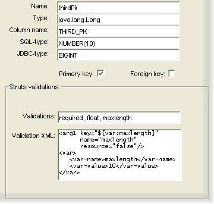

Field configuration screen

This screen contains configuration options for an entity field:
- Name: this is the field name, which must be a valid Java field name.
- Type: the fully-qualified Java class of this field.
- Column name: the database column that this field maps to.
- SQL type: the column type from the database.
- JDBC type: the type that the JDBC driver should map to when reading the column's value.
- Primary key: this is checked if the field is a primary key.
- Foreign key: this is checked for a foreign-key field (a field whose value relates to a primary key from another table).
This screen has a seperate area that describes the Struts validations (if any) for this field. This is used for the
automatic generation of client and server-side user input validation checks: for example, if the user enters a value for the field
shown in the diagram above, it will be checked for:
- a null value ('required' describes a mandatory field),
- a value that corresponds to a 'float', e.g. 217, or 3.14159 but not "seven"
- maximum length.
The 'Validation XML' area contains the XML needed to support the declared validations: e.g. the example above contains the XML that
configures the 'maxlength' validation to a maximum length of 10 characters.
Click here for further reading on the Struts Validator Framework.